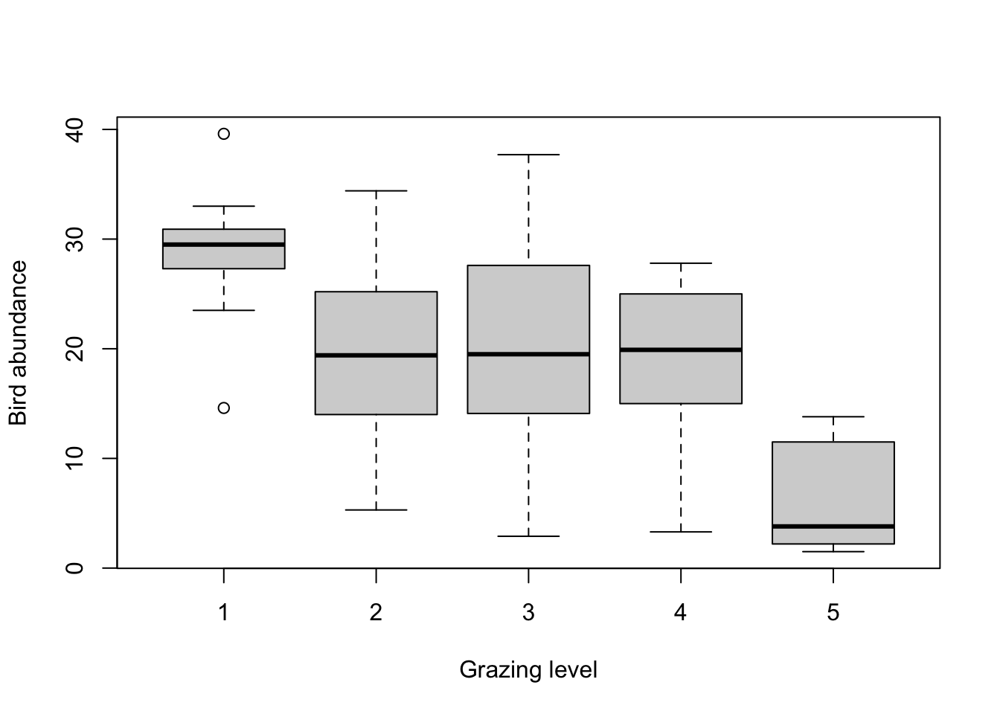
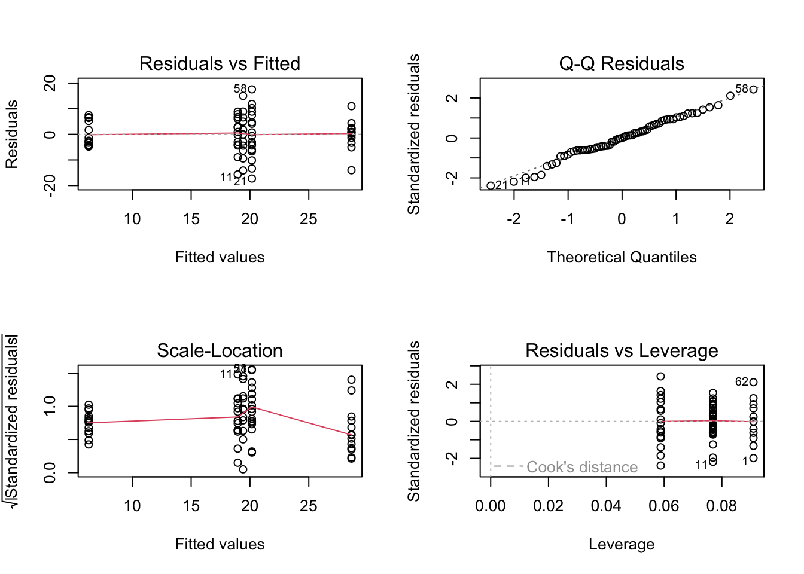
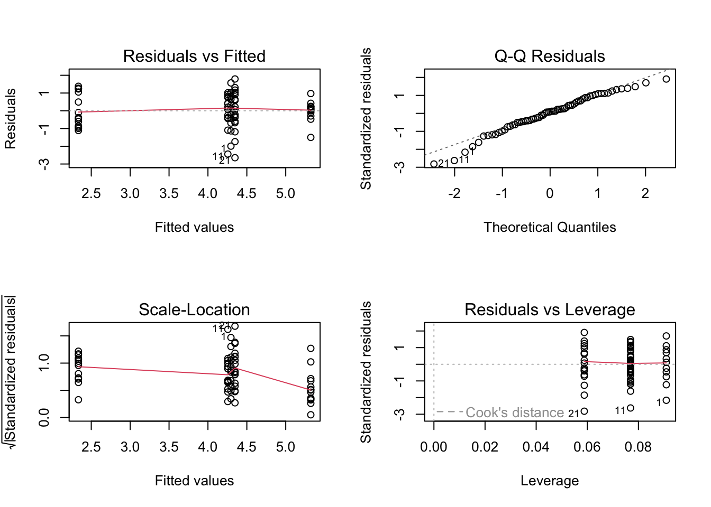
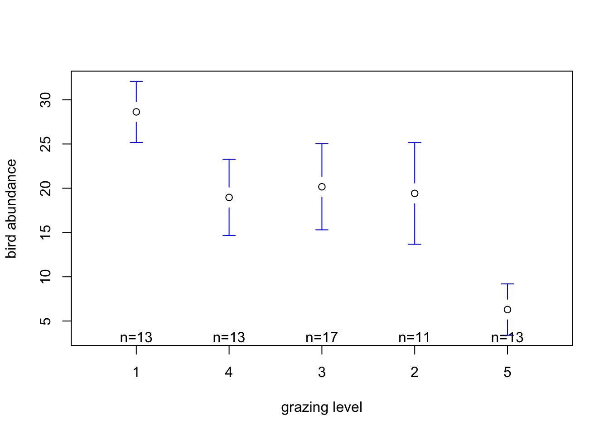
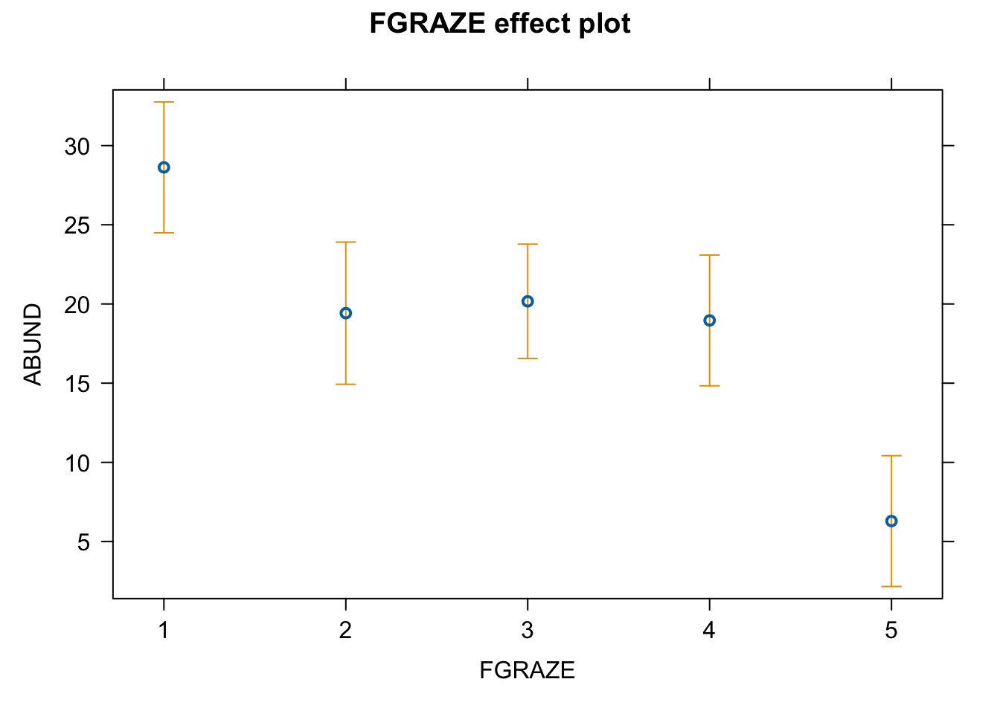
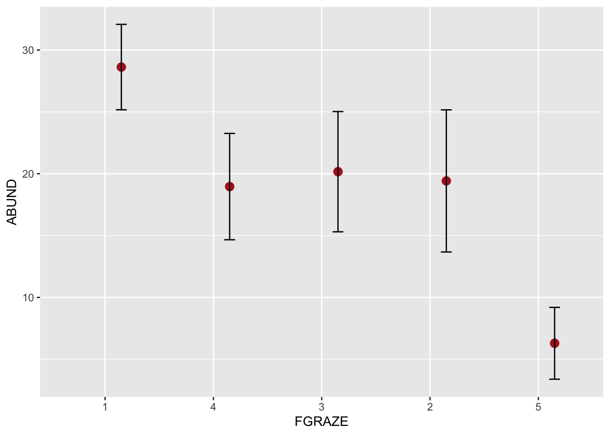
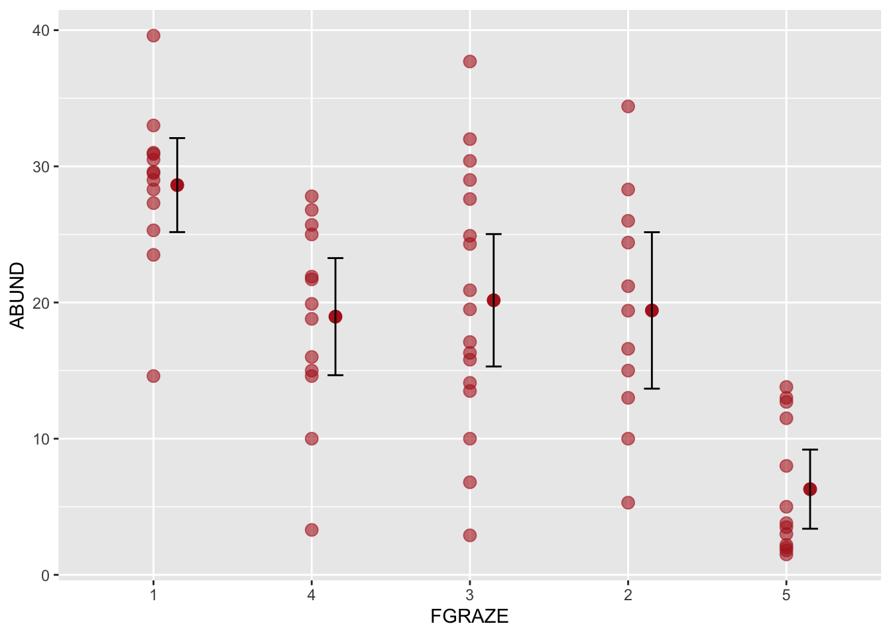

1. As in previous exercises, either create a new R script (perhaps
call it ‘linear_model_2’) or continue with your previous R script in
your RStudio Project. Again, make sure you include any metadata you feel
is appropriate (title, description of task, date of creation etc) and
don’t forget to comment out your metadata with a # at the
beginning of the line.
2. Once again import the data file ‘loyn.txt’ into R and take a look
at the structure of this dataframe using the str()
function. In this exercise you will investigate whether the abundance of
birds (ABUND) is different in areas with different grazing
intensities (GRAZE). Remember, the GRAZE
variable is an index of livestock grazing intensity. Level 1 = low
grazing intensity and level 5 = high grazing intensity.
loyn <- read.table("data/loyn.txt", header = TRUE,
stringsAsFactors = TRUE)
str(loyn)
## 'data.frame': 67 obs. of 8 variables:
## $ SITE : int 1 60 2 3 61 4 5 6 7 8 ...
## $ ABUND : num 5.3 10 2 1.5 13 17.1 13.8 14.1 3.8 2.2 ...
## $ AREA : num 0.1 0.2 0.5 0.5 0.6 1 1 1 1 1 ...
## $ DIST : int 39 142 234 104 191 66 246 234 467 284 ...
## $ LDIST : int 39 142 234 311 357 66 246 285 467 1829 ...
## $ YR.ISOL: int 1968 1961 1920 1900 1957 1966 1918 1965 1955 1920 ...
## $ GRAZE : int 2 2 5 5 2 3 5 3 5 5 ...
## $ ALT : int 160 180 60 140 185 160 140 130 90 60 ...
3. As we discussed in the graphical data exploration exercise the
GRAZE variable was originally coded as a numeric (i.e. 1,
2, 3, 4, 5). In this exercise we actually want to treat
GRAZE as a categorical variable with five levels (aka a
factor). So the first thing we need to do is create a new variable in
the loyn dataframe called FGRAZE in which we
store the GRAZE variable coerced to be a categorical
variable with the factor() function (you can also use the
as.factor() function if you prefer).
# create factor GRAZE as it was originally coded as an integer
loyn$FGRAZE <- factor(loyn$GRAZE)
# check this
class(loyn$FGRAZE)
## [1] "factor"
4. Explore any potential differences in bird abundance between each
level of FGRAZE graphically using an appropriate plot
(hint: a boxplot might be useful here). How would you interpret this
plot? What might you expect to see in your analysis? Write your
predictions in your R script as a comment. What is the mean number of
birds for each level of FGRAZE?

# mean bird abundance for each level of FGRAZE
tapply(loyn$ABUND, loyn$FGRAZE, mean, na.rm = TRUE)
## 1 2 3 4 5
## 28.623077 19.418182 20.164706 18.961538 6.292308
# it looks from this plot and the table of means that the bird abundance is lowest for
# FGRAZE level 5 and highest for level 1. The bird abundance for levels 2, 3 and 4 all
# look similar. So in terms of differences in ABUND between groups we might expect
# FGRAZE level 5 to be different from the other grazing intensity group and possibly
# FGRAZE level 1 to be different from graze level 2,3 and 4 but this is not particularly
# clear. We might also expect there to be no differences between grazing levels 2,3 and
# 4.
5. Fit an appropriate linear model in R to explain the variation in
the response variable, ABUND, with the explanatory variable
FGRAZE. Remember to use the data = argument.
Assign this linear model to an appropriately named object
(birds_lm if your imagination fails you!).
6. Produce the ANOVA table using the anova() function on
the model object. What null hypothesis is being tested? Do you reject or
fail to reject the null hypothesis? What summary statistics would you
report? Summarise in your R script as a comment.
anova(birds_lm)
## Analysis of Variance Table
##
## Response: ABUND
## Df Sum Sq Mean Sq F value Pr(>F)
## FGRAZE 4 3324.2 831.06 14.985 1.272e-08 ***
## Residuals 62 3438.6 55.46
## ---
## Signif. codes: 0 '***' 0.001 '**' 0.01 '*' 0.05 '.' 0.1 ' ' 1
# null hypothesis : There is no difference in the mean bird abundance between the five
# levels of grazing. The p value is very small therefore reject this null hypothesis. In
# other words there is a difference in the mean bird abundance between grazing intensity
# levels.
# the summary statistics to report from this table are the F statistic with both of its
# degrees of freedom, and the P value: F_4,62 = 14.98, p < 0.0001.
# note that this test tells you only that the five means are not all equal. It doesn't
# tell you which levels differ, or by how much. That's what the rest of this exercise is
# for, and you'll put the whole thing together into a written summary in Q12.
7. Use the summary() function on the model object to
produce the table of parameter estimates (remember these are called
coefficients in R). Using this output what is the estimate of the
intercept and what does this represent? What is the null hypothesis
associated with the intercept? do you reject or fail to reject this
hypothesis?
Next we move onto the FGRAZE2 parameter, how do you
interpret this parameter? (remember they are contrasts). Again, what is
the null hypothesis associated with the FGRAZE2 parameter?
do you reject or fail to reject this hypothesis?
Repeat this interpretation for the FGRAZE3,
FGRAZE4 and FGRAZE5 parameters. Summarise this
as a comment in your R script.
Finally, just a reminder about P values and confidence intervals (see
the note
in the previous exercise if you’d like it again): lead with the estimate
and its interval rather than with the test, and never read a large P
value as evidence that two things are the same. Use the
confint() function on your model object to obtain the 95%
confidence intervals for the intercept and for each of the four
contrasts. Now go back over what you’ve just written and report each
contrast again as an estimated difference in bird abundance
with its confidence interval, rather than as a hypothesis that
you either reject or fail to reject. Which of the four
differences has been estimated most precisely, and which least
precisely? Can you see why? (hint: each contrast compares two grazing
levels, so how precisely you can estimate it depends on how many forest
patches there are in both of them. The
table() function will give you the group sizes).
summary(birds_lm)
##
## Call:
## lm(formula = ABUND ~ FGRAZE, data = loyn)
##
## Residuals:
## Min 1Q Median 3Q Max
## -17.2647 -4.3269 -0.0182 5.0948 17.5353
##
## Coefficients:
## Estimate Std. Error t value Pr(>|t|)
## (Intercept) 28.623 2.065 13.858 < 2e-16 ***
## FGRAZE2 -9.205 3.051 -3.017 0.00370 **
## FGRAZE3 -8.458 2.744 -3.083 0.00306 **
## FGRAZE4 -9.662 2.921 -3.308 0.00157 **
## FGRAZE5 -22.331 2.921 -7.645 1.64e-10 ***
## ---
## Signif. codes: 0 '***' 0.001 '**' 0.01 '*' 0.05 '.' 0.1 ' ' 1
##
## Residual standard error: 7.447 on 62 degrees of freedom
## Multiple R-squared: 0.4915, Adjusted R-squared: 0.4587
## F-statistic: 14.98 on 4 and 62 DF, p-value: 1.272e-08
# Here the intercept (baseline) is the mean abundance of birds for FGRAZE level 1. the
# null hypothesis for the intercept is that the intercept = 0. As the p value (p <
# 2e-16) is very small we reject this null hypothesis and conclude that the intercept is
# significantly different from 0. However, from a biological perspective this is not a
# particularly informative hypothesis to test. Nobody seriously entertained the idea
# that lightly grazed patches contain no birds at all, so rejecting it tells us nothing
# we didn't already know.
# now for the confidence intervals
confint(birds_lm)
## 2.5 % 97.5 %
## (Intercept) 24.49422 32.751934
## FGRAZE2 -15.30362 -3.106170
## FGRAZE3 -13.94324 -2.973506
## FGRAZE4 -15.50062 -3.822453
## FGRAZE5 -28.16985 -16.491684
# the far more useful thing to take from the intercept is the estimate itself together
# with its interval: mean bird abundance in graze level 1 is estimated at 28.62 birds
# (95% CI: 24.49 to 32.75 birds).
# the remaining estimates are differences (contrasts) between each level and the
# baseline. Let's report each one as an estimated difference with an interval, and leave
# the P value until the end of the sentence where it belongs.
# FGRAZE2: we estimate 9.20 fewer birds on average in graze level 2 than in graze level
# 1
# (95% CI: 15.30 fewer to 3.11 fewer birds, p = 0.004). The whole interval lies below
# zero,
# so we have clear evidence of a difference here. But notice how wide it is. A shortfall
# of
# 3 birds and a shortfall of 15 birds would mean rather different things ecologically,
# and
# with these data we can't distinguish between them.
# FGRAZE3: we estimate 8.46 fewer birds in graze level 3 than in graze level 1 (95% CI:
# 13.94 fewer to 2.97 fewer birds, p = 0.003).
# FGRAZE4: we estimate 9.66 fewer birds in graze level 4 than in graze level 1 (95% CI:
# 15.50 fewer to 3.82 fewer birds, p = 0.002).
# FGRAZE5: we estimate 22.33 fewer birds in graze level 5 than in graze level 1 (95% CI:
# 28.17 fewer to 16.49 fewer birds, p = 1.64e-10). This is far and away the largest of
# the four differences, and the entire interval sits well below the intervals for the
# other three contrasts.
# Before going further, be clear about what these four intervals are intervals FOR. They
# are intervals for the DIFFERENCE between a grazing level and graze level 1. They are
# not intervals for the bird abundance of a grazing level. So "-15.30 to -3.11" means
# "graze level 2 has somewhere between 3.11 and 15.30 fewer birds than graze level 1".
# It does not mean "graze level 2 has between 3.11 and 15.30 birds in it". We will get
# intervals for the five levels themselves in Q11, and they are different numbers
# entirely.
# so, which of the four differences is estimated most precisely? Compare the widths of
# the intervals: FGRAZE3 spans 10.97 birds, FGRAZE4 and FGRAZE5 both span 11.68, and
# FGRAZE2 spans 12.20. So the graze 1 versus graze 3 difference is the best estimated of
# the four, and graze 1 versus graze 2 the worst.
# why? Each of these is a comparison between two groups, so its precision depends on how
# much data there is in BOTH of them, not just one. Graze level 1 is the baseline and so
# appears in all four comparisons, which means the thing that varies between them is the
# size of the other group:
table(loyn$FGRAZE)
##
## 1 2 3 4 5
## 13 11 17 13 13
# graze level 3 has 17 patches, levels 4 and 5 have 13 each, and level 2 has only 11.
# The comparison involving the largest group is the tightest, and the one involving the
# smallest group is the loosest. Worth remembering when you are deciding how to spread
# your effort in your own sampling: a comparison is only ever as good as the smaller of
# the two groups going into it.
8. Now that you have interpreted all the contrasts with
FGRAZE level 1 as the intercept, set the intercept to
FGRAZE level 2 using the relevel() function,
refit the model, produce the new table of parameter estimates using the
summary() function again and interpret.
Repeat this for FGRAZE levels 3, 4 and 5. Can you
summarise which levels of FGRAZE are different from each
other? Use confint() on each of your refitted models as
well as summary(), and as you go, keep an eye on what
releveling does and does not change.
# Set FGRAZE level 2 to be the intercept
loyn$FGRAZE <- relevel(loyn$FGRAZE, ref = "2")
birds_lm2 <- lm(ABUND ~ FGRAZE, data = loyn)
summary(birds_lm2)
##
## Call:
## lm(formula = ABUND ~ FGRAZE, data = loyn)
##
## Residuals:
## Min 1Q Median 3Q Max
## -17.2647 -4.3269 -0.0182 5.0948 17.5353
##
## Coefficients:
## Estimate Std. Error t value Pr(>|t|)
## (Intercept) 19.4182 2.2454 8.648 3.00e-12 ***
## FGRAZE1 9.2049 3.0509 3.017 0.0037 **
## FGRAZE3 0.7465 2.8817 0.259 0.7965
## FGRAZE4 -0.4566 3.0509 -0.150 0.8815
## FGRAZE5 -13.1259 3.0509 -4.302 6.11e-05 ***
## ---
## Signif. codes: 0 '***' 0.001 '**' 0.01 '*' 0.05 '.' 0.1 ' ' 1
##
## Residual standard error: 7.447 on 62 degrees of freedom
## Multiple R-squared: 0.4915, Adjusted R-squared: 0.4587
## F-statistic: 14.98 on 4 and 62 DF, p-value: 1.272e-08
confint(birds_lm2)
## 2.5 % 97.5 %
## (Intercept) 14.929641 23.906722
## FGRAZE1 3.106170 15.303621
## FGRAZE3 -5.013969 6.507018
## FGRAZE4 -6.555369 5.642082
## FGRAZE5 -19.224600 -7.027149
# The intercept is now FGRAZE level 2, so we can compare between levels '2 and 3', '2
# and 4', and '2 and 5'.
# Also note that the rest of the model output (R^2, F, DF etc) is the same as the
# previous model. It is the same model, we have just changed the intercept and therefore
# the contrasts.
loyn$FGRAZE <- relevel(loyn$FGRAZE, ref = "3")
birds_lm3 <- lm(ABUND ~ FGRAZE, data = loyn)
summary(birds_lm3)
##
## Call:
## lm(formula = ABUND ~ FGRAZE, data = loyn)
##
## Residuals:
## Min 1Q Median 3Q Max
## -17.2647 -4.3269 -0.0182 5.0948 17.5353
##
## Coefficients:
## Estimate Std. Error t value Pr(>|t|)
## (Intercept) 20.1647 1.8062 11.164 < 2e-16 ***
## FGRAZE2 -0.7465 2.8817 -0.259 0.79645
## FGRAZE1 8.4584 2.7438 3.083 0.00306 **
## FGRAZE4 -1.2032 2.7438 -0.438 0.66255
## FGRAZE5 -13.8724 2.7438 -5.056 4.06e-06 ***
## ---
## Signif. codes: 0 '***' 0.001 '**' 0.01 '*' 0.05 '.' 0.1 ' ' 1
##
## Residual standard error: 7.447 on 62 degrees of freedom
## Multiple R-squared: 0.4915, Adjusted R-squared: 0.4587
## F-statistic: 14.98 on 4 and 62 DF, p-value: 1.272e-08
confint(birds_lm3)
## 2.5 % 97.5 %
## (Intercept) 16.554125 23.775286
## FGRAZE2 -6.507018 5.013969
## FGRAZE1 2.973506 13.943236
## FGRAZE4 -6.688033 4.281698
## FGRAZE5 -19.357264 -8.387533
# The intercept is now FGRAZE level 3, so we can compare '3 and 4' and '3 and 5'
loyn$FGRAZE <- relevel(loyn$FGRAZE, ref = "4")
birds_lm4 <- lm(ABUND ~ FGRAZE, data = loyn)
summary(birds_lm4)
##
## Call:
## lm(formula = ABUND ~ FGRAZE, data = loyn)
##
## Residuals:
## Min 1Q Median 3Q Max
## -17.2647 -4.3269 -0.0182 5.0948 17.5353
##
## Coefficients:
## Estimate Std. Error t value Pr(>|t|)
## (Intercept) 18.9615 2.0655 9.180 3.65e-13 ***
## FGRAZE3 1.2032 2.7438 0.438 0.66255
## FGRAZE2 0.4566 3.0509 0.150 0.88151
## FGRAZE1 9.6615 2.9210 3.308 0.00157 **
## FGRAZE5 -12.6692 2.9210 -4.337 5.41e-05 ***
## ---
## Signif. codes: 0 '***' 0.001 '**' 0.01 '*' 0.05 '.' 0.1 ' ' 1
##
## Residual standard error: 7.447 on 62 degrees of freedom
## Multiple R-squared: 0.4915, Adjusted R-squared: 0.4587
## F-statistic: 14.98 on 4 and 62 DF, p-value: 1.272e-08
confint(birds_lm4)
## 2.5 % 97.5 %
## (Intercept) 14.832682 23.090395
## FGRAZE3 -4.281698 6.688033
## FGRAZE2 -5.642082 6.555369
## FGRAZE1 3.822453 15.500624
## FGRAZE5 -18.508316 -6.830146
# The intercept is now FGRAZE level 4, so we can compare '4 and 5'
# Putting all ten pairwise differences together, with their intervals, the picture is:
# level 1 sits well above the other four, level 5 sits well below the other four, and
# levels 2, 3 and 4 cannot be separated from one another by these data.
# One important thing to notice as you work through these. Releveling doesn't change the
# model at all: the fitted values, the residuals, the R^2 and the F test are all
# identical every time. All that changes is which set of comparisons R chooses to show
# you.
# Check this for yourself in the confint() output above. The difference between graze
# levels 2 and 3 is 0.75 birds (95% CI: -5.01 to 6.51) when level 2 is the baseline, and
# -0.75 birds (95% CI: -6.51 to 5.01) when level 3 is. Same comparison, same width of
# interval, sign flipped. That is one result, not two.
9. Staying with the summary table of parameter estimates, how much of
the variation in bird abundance does the explanatory variable
FGRAZE explain? As in the previous exercise, decide which
of the two R2 values you should quote and why. This model
estimates more parameters than the last one did, so is the gap between
them bigger or smaller here?
# The multiple R-squared value is 0.491 and therefore 49.1% of the variation in ABUND is
# explained by FGRAZE
# The adjusted R-squared is 0.459. Recall from the previous exercise that the adjusted
# value penalises you for the number of parameters estimated, whereas the multiple
# R-squared can only go up as you add terms.
# The gap between the two is bigger here: 0.033 against 0.006 in the previous exercise.
# That's because this model estimates five parameters (an intercept plus four contrasts)
# rather than two, so there is more to penalise. That is exactly the point of the
# adjustment.
# Since this is still a single explanatory variable model, quoting the multiple
# R-squared is fine, as long as you say which one it is. The moment you start comparing
# models with different numbers of terms, as you will in exercise 4, switch to the
# adjusted value.
10. Now onto a really important part of the model fitting process.
Let’s check the assumptions of your linear model by creating plots of
the residuals from the model. Remember, you can easily create these
plots by using the plot() function on your model object.
Also remember that if you want to see all plots at once then you should
split your plotting device into 2 rows and 2 columns using the
par() function before you create the plots. Check each of
the assumptions using these plots and report whether your model meets
these assumptions in your R script.
# first split the plotting device into 2 rows and 2 columns
par(mfrow = c(2,2))
# now create the residuals plots
plot(birds_lm)
# To test the normality of residuals assumption we use the Normal Q-Q plot. Although the
# majority of the residuals lie along the reference line there are five residuals which
# are all below the line resulting in reasonably substantial negative residuals. This
# suggest that the model does not fit these observation very well.
# Looking at the homogeneity of variance assumption (Residuals vs Fitted and
# Scale-Location plot) you can see the five columns of residuals corresponding to the
# fitted values for the five grazing levels. Again, things don't look great. The spread
# for the lower fitted values (left side of the plot) is much narrower when compared to
# the other groups. This suggests that the homogeneity of variance assumption is not met
# (i.e. the variances are not the same). The same cluster of negative residuals we
# spotted in the Normal Q-Q plot also appears in the Residuals vs Fitted plot suggesting
# that it is these residuals that are responsible.
# The only real good news is that there doesn't appear to be any influential or unusual
# residuals as indicated in the Residuals vs Leverage plot.
# So what to do? You could go back and check the original field notebook data to see if
# a transcribing mistake has been made (seems unlikely and you dont have this luxury
# anyway). You could also try applying a transformation (log or square root) on the
# ABUND variable, refit the model and see if this improves things. For example
loyn$ABUND.SQRT <- sqrt(loyn$ABUND)
birds_lm_sqrt <- lm(ABUND.SQRT ~ FGRAZE, data = loyn)
par(mfrow = c(2,2))
plot(birds_lm_sqrt)
# Sadly this doesn't seemed to have improved things!
# Or finally, you can relax the assumption of equal variance and estimate a separate
# variance for each group using generalised least squares. This is not something we will
# do on this course but will cover in a more advanced statistics course!
11. To finish, let’s plot the model. Don’t panic about the code, I’ll give you that in the solutions, but do spend some time on the two questions underneath because they matter rather more than the code does.
Have a go at using our old trusty predict() function to
calculate the fitted mean bird abundance for each level of
FGRAZE along with the standard errors. Then plot these
fitted values against grazing level and add the 95% confidence intervals
(you will need either the arrows() or the
segments() function to add the intervals to the plot).
There are also packages that will do the whole job for you in a line or
two, and I’ve put a couple of those in the solutions, so feel free to
use Google (yep, this is OK!) and have a look at the
effects package or ggplot2 if you fancy
it.
Once you have your plot:
The five intervals on your plot are not the four
intervals you calculated in Question 7. What is each one an interval
for? And why are there five here but only four in the
summary() table? Compare the interval for graze level 2 on
your plot against the FGRAZE2 interval from
confint(), and make sure you can say in words why the two
are different.
Looking at your plot, is it safe to conclude that two grazing levels differ whenever their intervals don’t overlap? And is it safe to conclude that they don’t differ whenever their intervals do overlap? Think carefully about this one before you look at the solution, because reading differences off overlapping error bars by eye is a mistake that appears in print constantly.
# using old faithful, the predict function, with base R graphics and the arrows function
# back in Q8 we changed the baseline level a few times with relevel(). Let's put it back
# to graze level 1 so everything below comes out in the natural order
loyn$FGRAZE <- relevel(loyn$FGRAZE, ref = "1")
my_data <- data.frame(FGRAZE = c("1", "2", "3", "4", "5"))
pred_vals <- predict(birds_lm, newdata = my_data, se.fit = TRUE)
# now plot these values
plot(1:5, seq(0, 50, length=5), type = "n",
xlab = "Graze intensity level", ylab = "Bird Abundance")
arrows(1:5, pred_vals$fit, 1:5, pred_vals$fit - 1.96 * pred_vals$se.fit,
angle = 90, code = 2, length = 0.05, col = "blue")
arrows(1:5, pred_vals$fit, 1:5, pred_vals$fit + 1.96 * pred_vals$se.fit,
angle = 90, code = 2, length = 0.05, col = "blue")
points(1:5, pred_vals$fit, pch = 16)
# (a) what are these five intervals?
# They are 95% confidence intervals for the MEAN bird abundance within each of the five
# grazing levels. There are five of them because there are five groups.
# In Q7 you got only four intervals, from confint(). (Note that summary() never gives
# you intervals at all, only estimates and standard errors. It is confint() that
# turns those into intervals.) There were four because those are contrasts, i.e.
# DIFFERENCES from the baseline, and a set of five groups has only four differences from
# a baseline. Nothing has gone missing.
# here are the five group means and their intervals written out
round(data.frame(FGRAZE = 1:5,
mean = pred_vals$fit,
lower = pred_vals$fit - 1.96 * pred_vals$se.fit,
upper = pred_vals$fit + 1.96 * pred_vals$se.fit), 2)
## FGRAZE mean lower upper
## 1 1 28.62 24.57 32.67
## 2 2 19.42 15.02 23.82
## 3 3 20.16 16.62 23.70
## 4 4 18.96 14.91 23.01
## 5 5 6.29 2.24 10.34
# Take graze level 2. On this plot it is 19.42 birds (15.02 to 23.82). From confint() in
# Q7, the FGRAZE2 contrast was -9.20 (-15.30 to -3.11).
# Said carefully, in words:
# plot : "the MEAN abundance of patches at graze level 2 is estimated at
# 19.4 birds, and these data are consistent with a mean anywhere
# between 15.0 and 23.8 birds"
# confint(): "the MEAN abundance at graze level 2 is estimated at 9.2 birds
# LOWER than at graze level 1, and these data are consistent with a
# difference anywhere between 3.1 and 15.3 birds lower"
# Note that both statements are about the MEAN of a group, not about individual patches.
# A confidence interval of 15.0 to 23.8 does NOT say that 95% of graze level 2 patches
# hold between 15 and 24 birds; plenty of individual patches sit well outside that
# range, as you can see from the raw data. It says that the group AVERAGE is somewhere
# in there. Getting this wrong is one of the most common errors in reporting, so it's
# worth reading that sentence twice.
# Both statements are true and both are useful, but they answer different questions and
# you must never quote one when you mean the other.
# graze level 1 is the one place the two agree: 28.62 birds (24.57 to 32.67) here
# against an intercept of 28.62 (24.49 to 32.75) from confint(), because the intercept
# IS the mean of graze level 1. The last-decimal difference is only because confint()
# uses the t distribution with 62 degrees of freedom, a multiplier of 2.00, while our
# plotting code above uses 1.96.
# (b) overlap, which is the one that really matters
# The rule works in one direction only.
# If two intervals do NOT overlap, those two means are clearly different (the difference
# between them would have a P value below 0.05). That direction is safe.
# If two intervals DO overlap, you cannot conclude anything from that. In particular you
# must not conclude that the two means are the same, or even that the difference isn't
# 'significant'. Two intervals can overlap quite noticeably while the difference between
# those two means still has a confidence interval that comfortably excludes zero.
# The reason is that the uncertainty in a difference is smaller than the two
# uncertainties added together. So the interval for a difference is narrower than you
# would guess by eye from looking at the two intervals for the means, and judging by
# overlap alone makes you too cautious. You end up reporting 'no difference' for
# comparisons that were perfectly well resolved.
# In these particular data the two views do happen to agree, and every pair of grazing
# levels whose difference is clearly resolved also has non-overlapping intervals. Don't
# take that as reassurance though, it's a coincidence of this dataset and not a rule.
# So what should you actually do? Use a plot like this to show a reader the overall
# pattern, because it does that far better than a table of contrasts ever will. But when
# you want to make a claim about one specific comparison, quote the confidence interval
# for that DIFFERENCE, which is what Q7 gave you, and not the two intervals for the
# means.
Two other ways of producing the same plot. Both give you essentially the same figure as the one above. These are here purely for information, so that you have some options and some working code if you want to make this kind of plot with your own data.
# Option 1: using the effects package, you may need to install this first
# install.packages('effects')
library(effects)
loyn_effects <- allEffects(birds_lm)
plot(loyn_effects,"FGRAZE", lty = 0)
# Option 2: using the ggplot2 package
library(ggplot2) # make the functions in ggplot2 available
# this plots the mean for each level of FGRAZE along with its 95% confidence interval
ggplot(loyn, aes(x = FGRAZE, y = ABUND)) +
stat_summary(fun = mean, geom = "point", color = "firebrick",
size = 3, position=position_nudge(x = 0.15)) +
stat_summary(fun.data = mean_cl_normal, geom = "errorbar",
width = 0.1, position=position_nudge(x = 0.15))
# and as an added bonus, if you wanted to plot the raw data alongside the means
ggplot(loyn, aes(x = FGRAZE, y = ABUND)) +
geom_point(color = "firebrick", size = 3, alpha = 0.6) +
stat_summary(fun = mean, geom = "point", color = "firebrick",
size = 3, position=position_nudge(x = 0.15)) +
stat_summary(fun.data = mean_cl_normal, geom = "errorbar",
width = 0.1, position=position_nudge(x = 0.15))
12. Now for reporting your results. Same idea as the previous exercise, but this time I’m not giving you the sentences, only the ingredients. Write a short results paragraph (four or five sentences is plenty) describing the effect of grazing intensity on bird abundance. Make sure it contains:
One thing to think about while you’re writing. Your
confint() output hands you four contrasts, all against
graze level 1, and writing all four out in prose is tedious to read and
buries the pattern. Have another look at your plot from Question 11.
What is the pattern here, and can you get it across in a single
sentence?
# Same health warning as the previous exercise: this is my version, not the only
# version.
# Mean bird abundance differed among the five grazing intensity levels (F 4,62 = 14.98,
# p < 0.001, n = 67 patches). Abundance was highest at the lowest grazing intensity
# (mean 28.6 birds, 95% CI: 24.5 to 32.8) and lowest at the highest intensity (mean 6.3
# birds), a difference of 22.3 birds (95% CI: 16.5 to 28.2). Grazing levels 2, 3 and 4
# were similar to one another (means 19.4, 20.2 and 19.0 birds) and all sat roughly 8 to
# 10 birds below level 1. The effect is therefore not a smooth decline across the
# grazing gradient, it is concentrated at the highest grazing intensity. Grazing
# intensity accounted for 49.2% of the variation in bird abundance.
# One thing I left out on purpose: the P value for the intercept (p < 2e-16). That tests
# the hypothesis "there are no birds at all in the least grazed patches", which nobody
# believed and nobody needed testing. A statistically impeccable result can still be
# biologically pointless, and a fair part of writing up well is deciding what to leave
# out.
End of the linear model with single categorical explanatory variable exercise